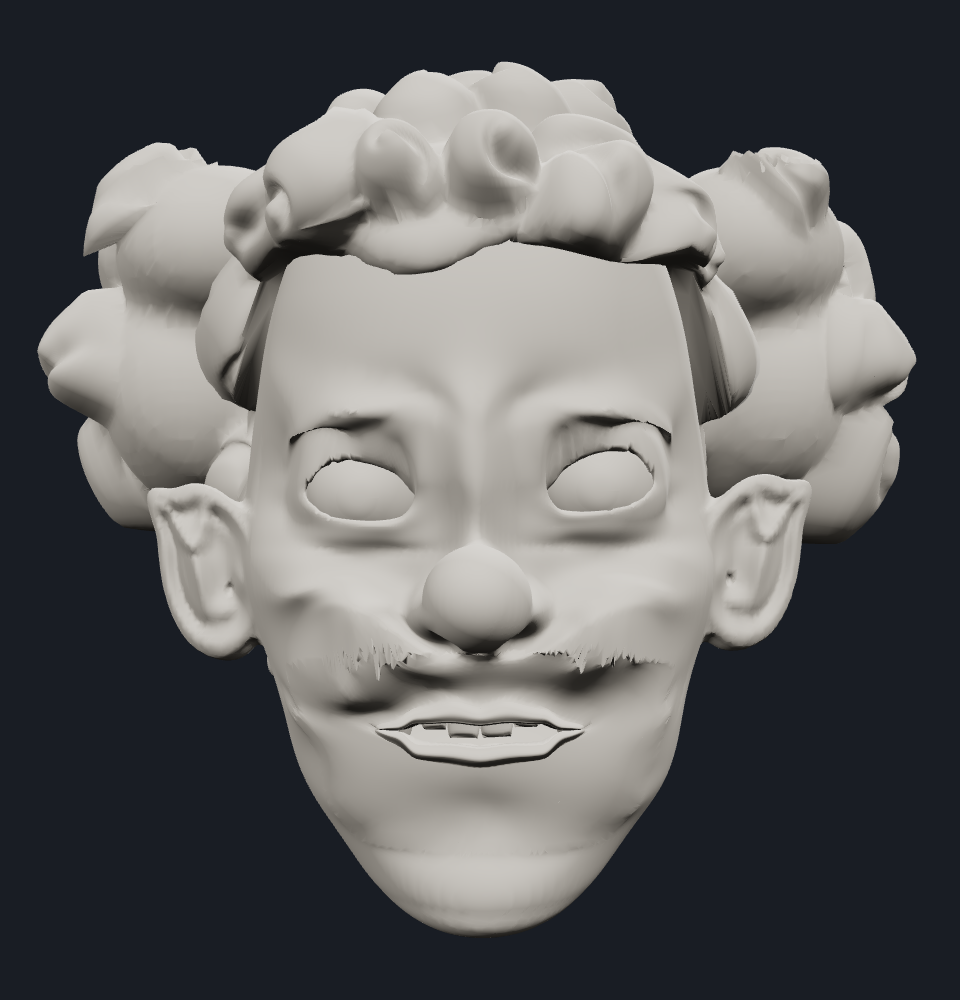
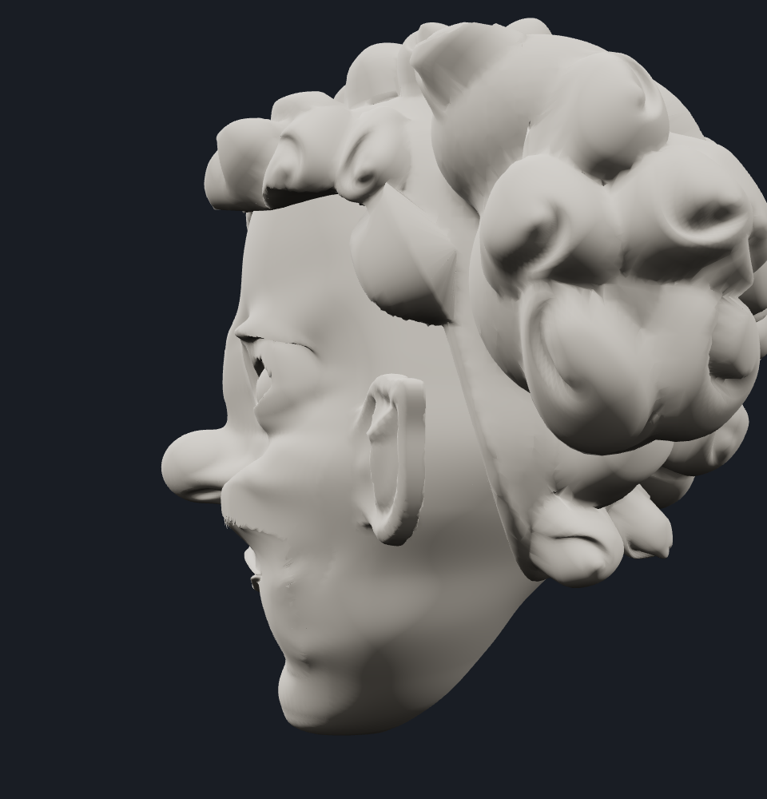
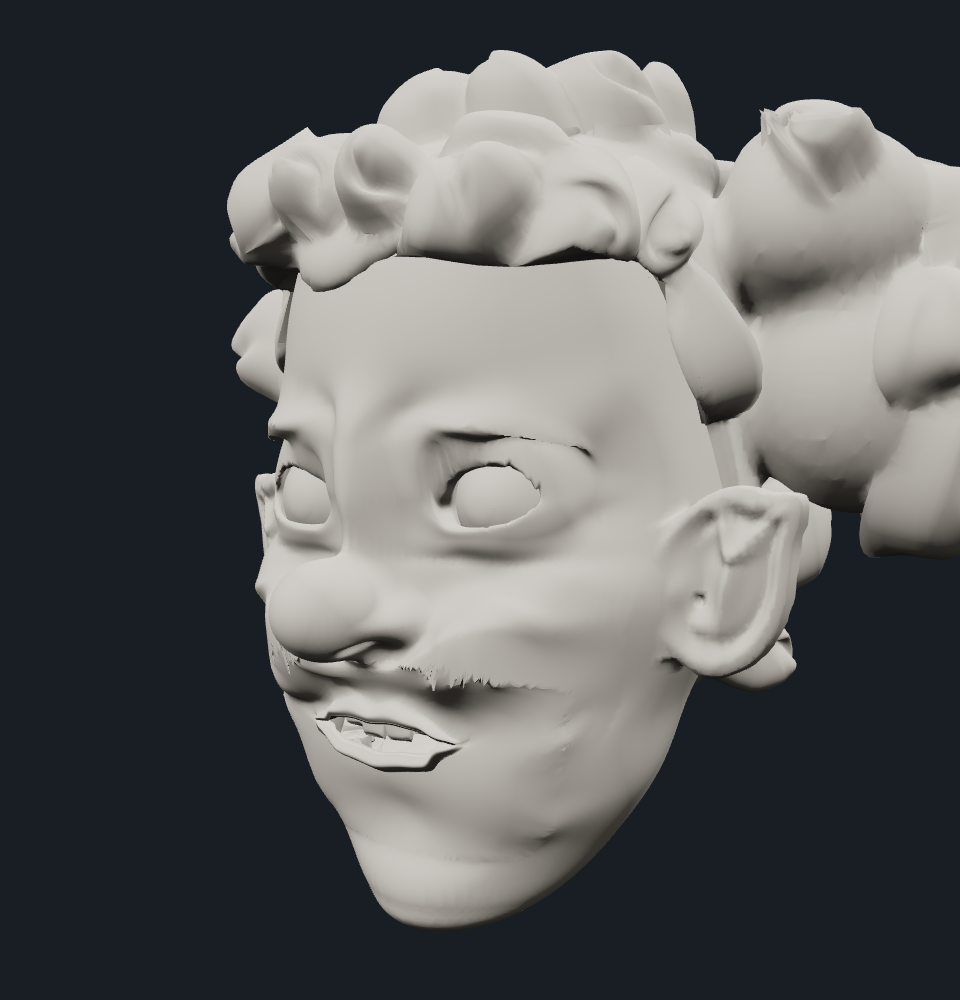
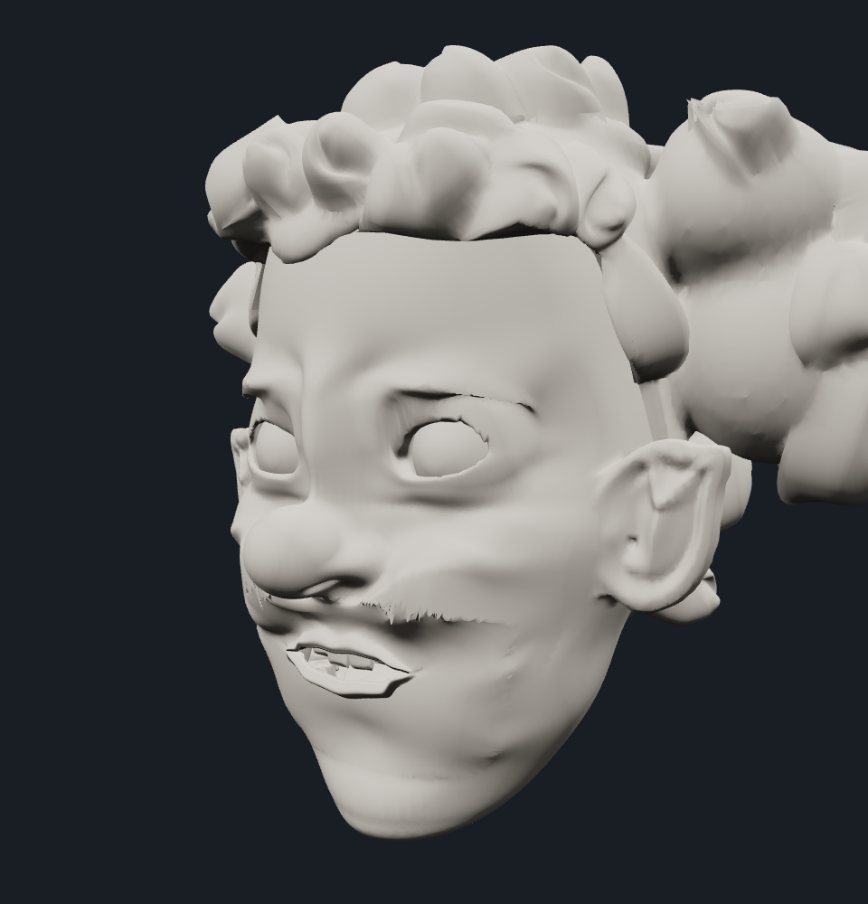
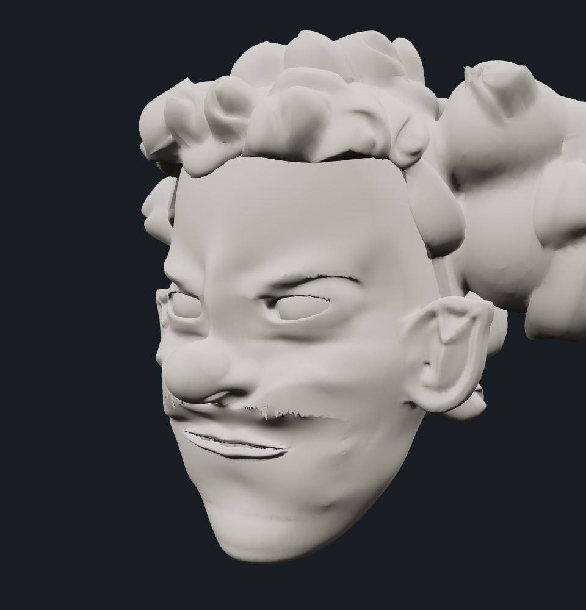
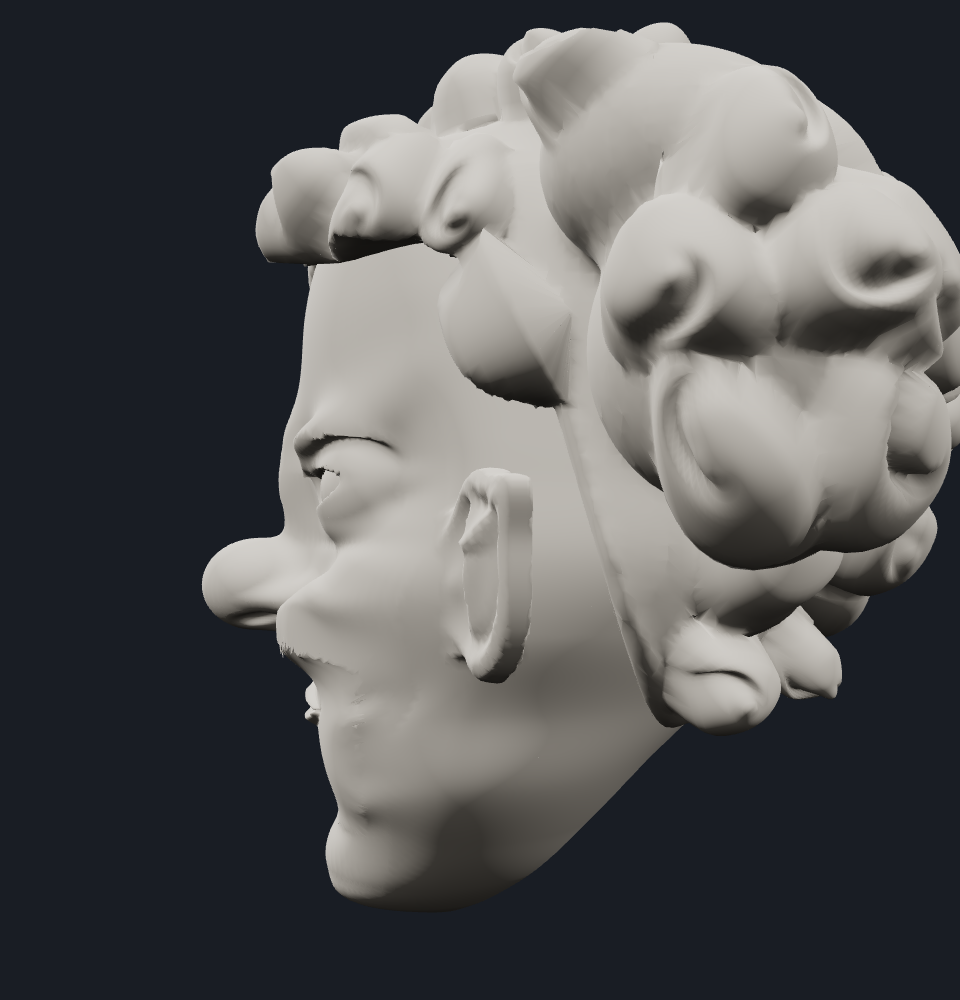
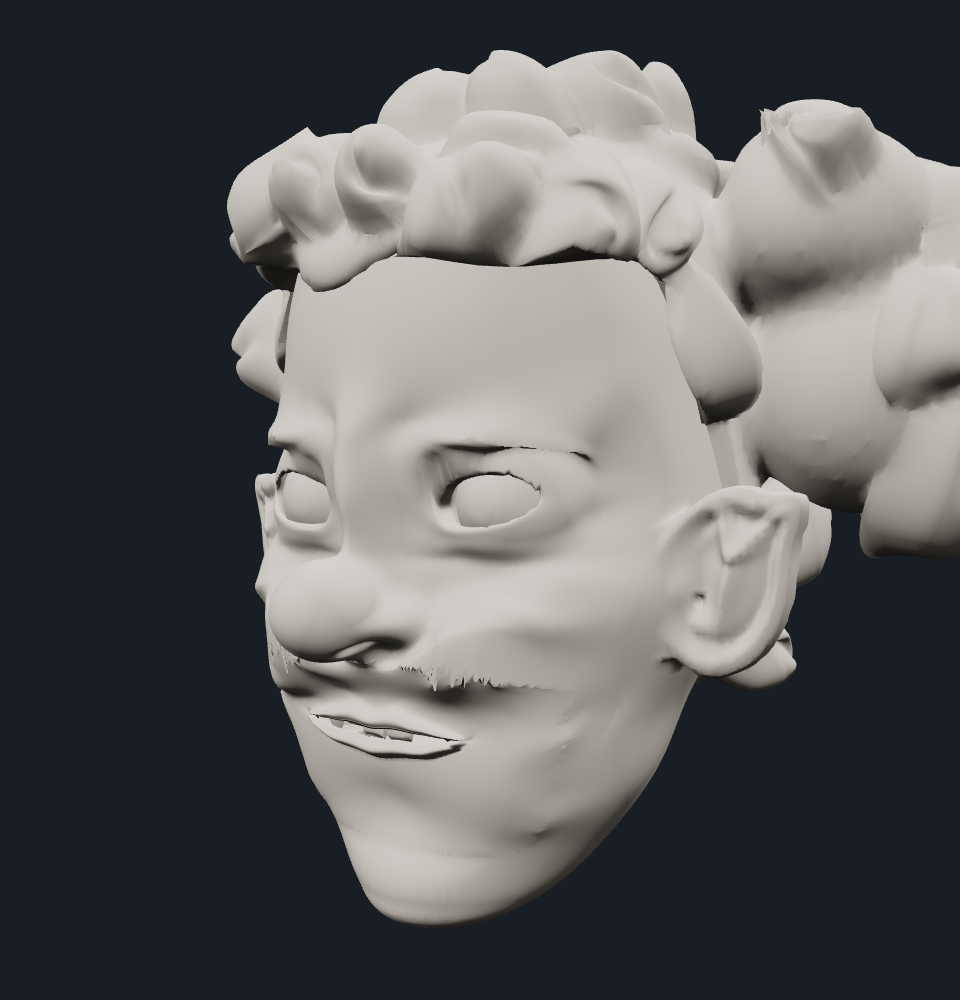

Jaw 38%, brow raise 100%, eye openness 90%, lipRound 0%, commissureIn 0%. Plain open mouth selected over stronger rounding. No mouth architecture changes.
All four candidates inspected front / three-quarter / side. Three midpoint blends inspected at matched angles. Existing static surface artifacts remain; this is not a whole-face cleanup or full animation release certification.
Interactive local expression viewer






